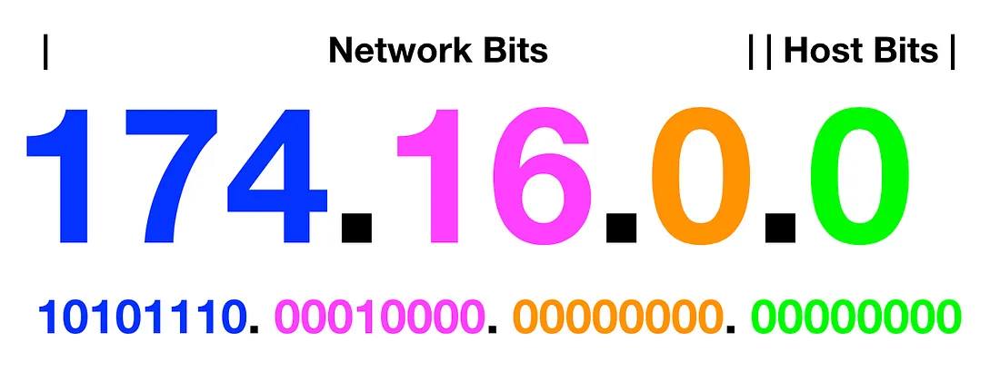
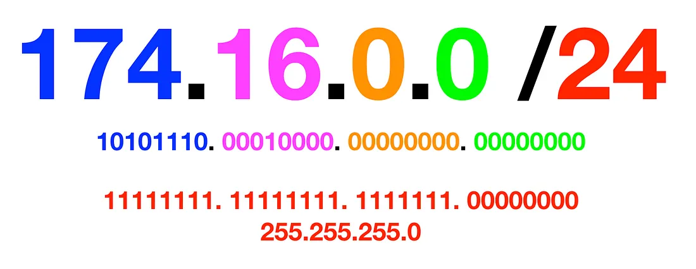

IPv4是互联网协议版本4的简称，是Internet上最常用的协议之一。IPv4地址是由32个二进制位组成的，通常表示为四个十进制数，每个数之间用点号分隔，例如192.168.0.1。
下面的图片展示了IP地址的Classful addressing（类别寻址）方式，它是IPv4早期采用的一种地址分配方案。
在Classful addressing中，IP地址被分为3个主要类别：Class A、Class B和Class C。每个类别都有一个固定的地址前缀长度，这决定了可以分配的网络和主机数量。这些类别分别如下：
这种地址分配方式的缺点是，它没有考虑到实际需要的IP地址数量，因此会导致大量的IP地址浪费。此外，当需要更多的IP地址时，必须向更高的地址类别转移，这也会导致浪费。
因此，Classful addressing已经被Classless Inter-Domain Routing（CIDR）所取代，CIDR允许更灵活的地址分配，可以更好地满足实际需求。
CIDR是无类别域间路由的缩写，它是一种更有效的IP地址分配方法。CIDR将IP地址分成前缀和后缀两部分，前缀表示网络部分，后缀表示主机部分。CIDR的出现使得IP地址的利用更加有效，也方便了网络管理员的管理。
让我们首先剖析这个示例 IP 地址。由句点“174.16.0.0”分隔的数字是基础二进制数字的数字表示（例如“10101110”由“174”表示）。前三个数字通常代表网络位（用于标识网络/子网的地址），最后一个数字通常代表主机位（用于标识主机/目标的地址）。
CIDR 表示法通过一些巧妙的数学运算使我们免于耗尽 IP 地址。理解 CIDR 的一个简单方法是将末尾的符号视为将分配给网络的位数。在此示例中，“/24”表示前 24 位分配给网络 (10101110.00010000.00000000)，其余 8 位将分配给主机 (.00000000)。“/24”的另一种写法是“11111111.11111111.11111111.00000000”，其中 1 代表前 24 位为“on”。也可以写为“255.255.255.0”，称为“子网掩码”。
CIDR是一种IP地址分配方案，使用CIDR前缀来表示网络的地址和子网掩码信息。如果将CIDR前缀从/24变为/26，网络前缀将增加2位，主机地址将减少2位。更小的CIDR前缀提供更多的网络，但每个网络具有更少的主机地址，相反，更大的CIDR前缀提供更多的主机地址，但每个网络具有更少的IP地址。CIDR前缀可以根据需要进行更改，以便更好地满足实际需求。
IPv6是Internet协议版本6，是IPv4的下一代协议，用于在互联网上唯一标识设备和网络。IPv6地址是由128位二进制数表示的，通常用16进制表示，每4位用一个冒号分隔，例如：2001:0db8:0000:0000:0000:ff00:0042:8329。
与IPv4相比，IPv6地址空间更大，可以支持更多的设备和网络连接。IPv6地址的地址空间为2的128次方，即约340万亿亿亿亿个地址，远远超过IPv4的4.3亿个地址。
IPv6地址通常由三部分组成：全局前缀（Global Prefix）、子网ID（Subnet ID）和接口ID（Interface ID）。
IPv6地址：2001:0db8:0000:0000:0000:ff00:0042:8329
IPv4 地址示例：
IPv6 地址示例：